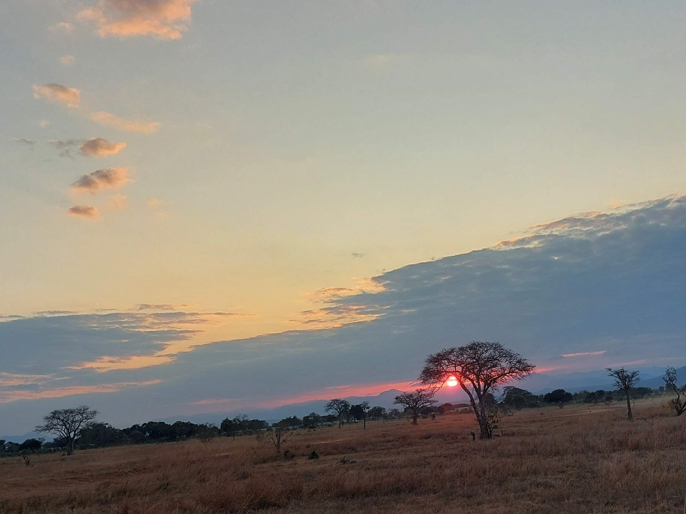

- Danemark copenhague port mer port nyhavn bateau batiment

- océan ocean mer vue panorama rio bresil brésil
- forêt nuage arbre montagne bulgarie

- fjord nuage neige norvège norvege paysage montagne
- finlande nuage arbre neige laponie

- canal amsterdam pont pays-bas

- coucher de soleil bateau ocean océan sable mer Zanzibar tanzanie

- nuage Bulgarie montagne nature arbre

- coucher de soleil Bulgarie

- coucher de soleil

- valdeblore nuage montagne nature lac arbre
- sahara afrique tunisie sable

- rose fleurs Danemark

- panorama nuage fjord neige norvège norvege paysage montagne

- eglise fleurs Danemark

- fleurs jaune

- glacier glace neige norvège norvege paysage montagne
- nuage neige norvège norvege paysage montagne
- port bateau nuage coucher de soleil Danemark

- barcelone mosaique salamandre

- barcelone fontaine

- espagne coucher de soleil

- village batiment

- Alquézar village Espagne

- rio bresil brésil corcovado monument
- phare arbre Bornholm Danemark île nature

- Espagne tenerife Tenerife mer ocean rocher nature

- plage Espagne espagne tenerife Tenerife mer ocean nature

- Tanzanie afrique Savane Mikumi National safari
- barcelone Barcelone espagne Espagne monument Sagrada Familia
- Tanzanie afrique Savane Mikumi National safari lion animal

- Tanzanie afrique Savane Mikumi National safari hippopotame animal
- Tanzanie afrique Savane Mikumi National safari oiseau animal
- Tanzanie afrique Savane Mikumi National safari girafe animal

- Tanzanie afrique Savane Mikumi National safari elephants animal

- Tanzanie afrique Savane Mikumi National safari animal

- océan ocean mer vue rio bresil brésil Paraty

- Tunsie afrique musee

- Tunsie afrique ocean mer bateau ciel

- Tunsie afrique

- Tunsie afrique ocean mer bateau chameau animal ciel
- Tunsie afrique djerba

- Tunsie afrique monument

- Tunsie afrique monument

- Tunsie afrique monument

- Tunsie afrique ocean mer bateau rocher ciel

- Italie Venise canal bateau

- Italie Venise canal bateau